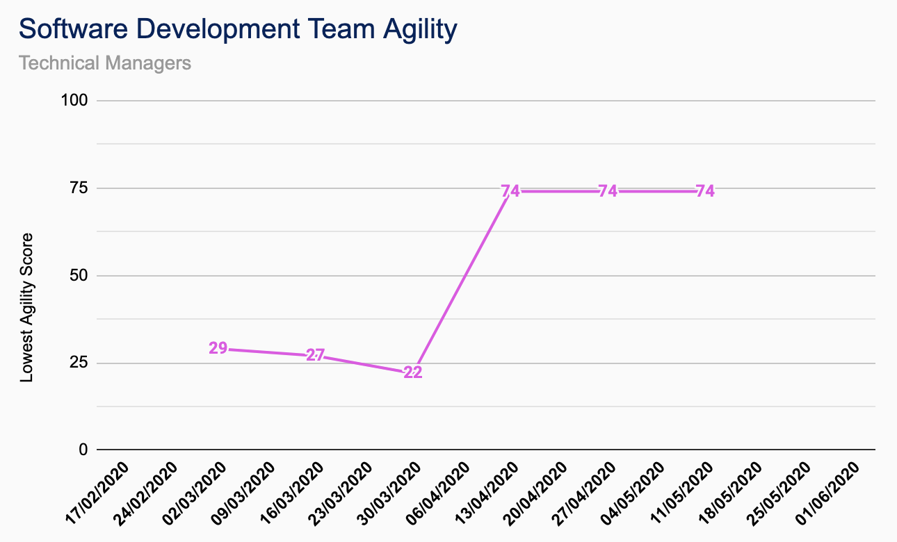
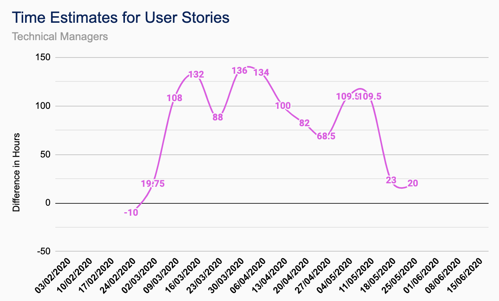
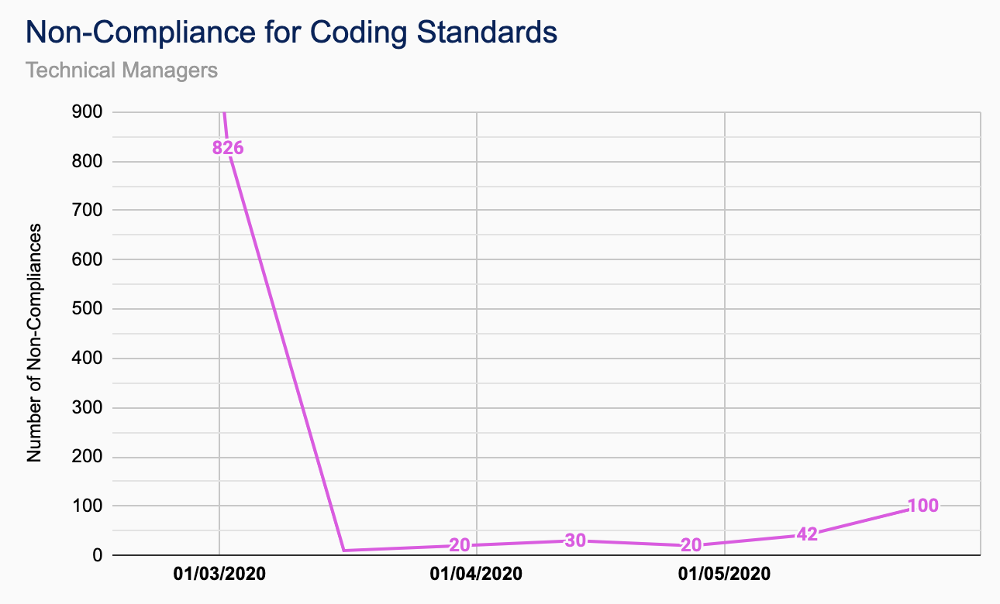

Che McKirgan
Technical Manager &
Test Engineer
Joined: Sept. 2019
Related Projects: TutorPoint
Education: MEng Electronic Engineering with Computer Science
As part of CUBIXEL . . .
. . . I'm involved with all technical decisions made regarding our products. As a technical manager I oversee the development of new features and products, as well as making decisions relating our development and deployment practices. I also contribute to the codebase as a developer and provide advice to other development teams when needed.
For TutorPoint . . .
. . . I've been responsible for the development and integration strategy of Tutorpoint. I’m also responsible for the technology used to maintain our development practices, as well as managing the server used for content ingestion and distribution, and database management. I’ve made some contributions towards the RFI, RFQ and confidentiality agreements between CUBIXEL and its employees and contractors.
Outside of work . . .
. . . I enjoy cooking and baking as a way to relax. When I have time I enjoy traveling, seeing new places and experiencing new things. My favourite place to be is in the air and I hope to start working towards my pilot's license in the future.
Favourite programming language?
Python or C++.
Contributions
| Documentation |
|---|
| CUBIXEL QA Manual |
| TutorPoint Functional Specification |
| TutorPoint Testing and Integration Plan |
| TutorPoint RFI |
| TutorPoint |
|---|
| Initial Client, Server and Database Building |
| MySQL Database and Java/MySQL Interface |
| Login and Register Functionality |
| Server-side Whiteboard Module |
| Media Playback Module |
| Webcam Module |
| Other |
|---|
| Content Ingestion and Distribution Servers |
| TutorPoint Name and Logo Design |
| MySQL Database Management |
| GitHub Management |
TutorPoint Breakdown


QA Metrics
-

Software Development Team Agility
Using the ‘Assess Your Agility’ self-assessment quiz. This should be done at the beginning of each iteration to review the previous iterations performance. Lowest Value Recorded. -

Time Estimates for User Stories
Difference between estimated time and actual time for completion of user stories so as to refine estimates. This should be done at the end of each iteration as a sum of all stories. Further time estimates should then be updated based on the insight from this check. -

Non-Compliance for Coding Standards
A code review should be done for each story completed and marked as ‘checked’ alongside the user story card. Any non-compliances should be highlighted and recorded. The number of non-compliances should be reduced as the team learns the coding standards. Code should also be reviewed for adherence to standards imposed by outside regulatory bodies as and when required.